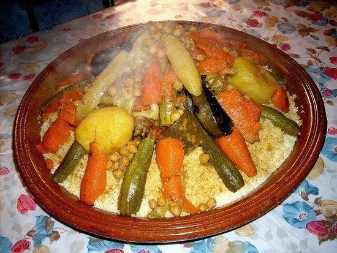

The couscous(recipe for 8 people)

Preparation
Steaming couscous with a couscous maker
- Place the meat in a pot, add salt, pepper, ginger, turmeric, both grated tomatoes, a bunch of herbs, oil, onion and water.
- Place the chickpeas in a muslin, tie it and put it in the pot. Cover the pot and place it on the stove.
- When it boils, lower the heat and simmer until the chickpeas are half-cooked. Add the carrots, cabbage and turnips. Continue cooking for about 20 to 25 minutes.
- Add beans, 2nd bunch of herbs, eggplant, zucchini, pumpkin, chili, tomato wedges, salt and pepper. Steam the Couscous as directed in the basic recipe.
- At the end of the cooking of the vegetables, remove the pot from the fire. Coat the hot Couscous with rancid butter "Smen" or butter and place it in a dish.
Baste the hot Couscous with broth and garnish with meat and vegetables.
Ingredients
- 750 g of DARI Medium Wheat Couscous
- 1 tsp. rancid S'men butter (optional)
For the sauce :
- 1.5 kg of veal
- 1 tsp. ginger
- 1 tsp. turmeric
- 1 tsp. pepper
- Salt
- 2 grated tomatoes
- 2 large onions, chopped
- 2 small bunches of parsley and coriander
- 8 cl of oil
- 2 l of water
- 100 g chickpeas soaked the day before
- 1/2 cabbage
- 6 carrots
- 6 turnips
- 2 eggplants
- 6 zucchini
- 250 g of shelled beans
- 500 g of pumpkin
- 2 tomatoes, quartered
- 1 hot pepper